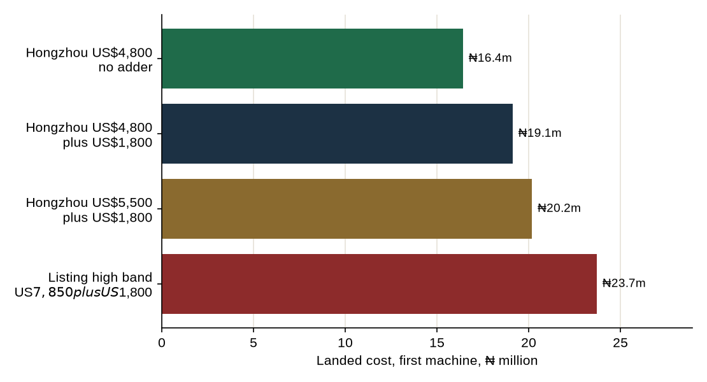
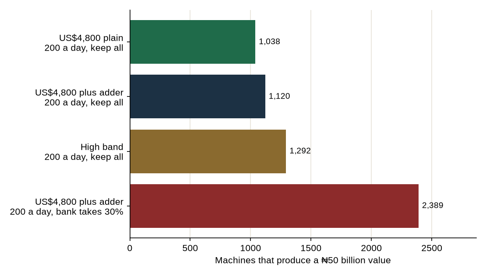

Feasibility study · October 2026
The machine is the Hongzhou cash in/out kiosk at the published 10-plus price of US$4,800, landed on the same sheet as the earlier papers. A naira-template stand-in of US$1,800 is still in the cheque until a proforma drops it.
The path. Order the China machine, not the US$7,850 listing. With the template stand-in it lands at ₦19.13m. Keep the whole ₦500. Count 200 other-bank withdrawals a day. Open 1,120 of them. The cheque is ₦21.08bn, cash profit is ₦24.21bn a year, and the value at 28% is ₦50.03bn. That is 4.7% of Nigeria’s recent daily ATM withdrawals. A 70/30 split at 120 a day still does not reach ₦50 billion. Twelve machines, at ₦265.89m, come before the cheque.
Shenzhen Hongzhou’s own page prints US$5,500 for one to nine cash in/out kiosks and US$4,800 for ten or more. The page names a cash recycler. A second Hongzhou page says the firm customises denominations for Nigeria and quotes 30 to 35 working days. It prints no fee for that work. The only published per-unit “Customized” line found on a bill-recycler kiosk is US$1,800, and that listing does not say the line is a naira template. It stays in the working cheque as a stand-in. The US$3,650 floor of a different listing sits below this factory price. It is not used.

| Invoice | Ex-works | Landed, first machine |
|---|---|---|
| US$4,800, ten or more, no adder | ₦6.39m | ₦16.43m |
| US$4,800 plus the US$1,800 stand-in | ₦8.79m | ₦19.13m |
| US$5,500, one to nine, plus the stand-in | ₦9.72m | ₦20.18m |
| Earlier high band, US$7,850 plus the stand-in | ₦12.85m | ₦23.72m |
The working machine is the second row, ₦19.13m. The first row, ₦16.43m, is the invoice if Hongzhou’s Nigeria line is already inside the US$4,800. The one-to-nine price does not apply to a twelve-machine proof. Street cost on the working machine is ₦5.31m a year. Full cost, adding depreciation over seven years, is ₦8.04m. The bank still carries the cash and the transit. Effective days are 270. One withdrawal is one ₦20,000 block at the ₦500 cap.
At a 70/30 split the working machine covers cash costs at 56 withdrawals a day and full cost at 85. On the dearer band those lines were 61 and 97. Keeping the whole surcharge, the lines are 39 and 60. If the adder is not on the invoice, the 70/30 lines are 53 and 78. China moves the hurdle down. It does not remove it.
| Split | Withdrawals a day | Revenue | Cash profit | Return | Payback | Value at 28% |
|---|---|---|---|---|---|---|
| Keep all | 60 | ₦8.10m | ₦2.79m | 0.5% | 6.9 years | -₦10.94m |
| Keep all | 120 | ₦16.20m | ₦10.89m | 54.2% | 1.8 years | ₦12.85m |
| Keep all | 200 | ₦27.00m | ₦21.69m | 112.8% | 0.9 years | ₦44.57m |
| Bank takes 30% | 60 | ₦5.67m | ₦359,939 | -34.5% | Not within 7 years | -₦18.08m |
| Bank takes 30% | 120 | ₦11.34m | ₦6.03m | 24.9% | 3.2 years | -₦1.42m |
| Bank takes 30% | 200 | ₦18.90m | ₦13.59m | 69.2% | 1.4 years | ₦20.78m |
Keeping the whole surcharge, 120 a day now clears 28%: the return is 54.2% and the value is ₦12.85m. Giving the bank 30% at 120 a day earns 24.9% and the value is still -₦1.42m. China does not make that split clear the hurdle. At 200 a day the 70/30 machine does clear it, at 69.2%.

| Plan | Machines | Opening cheque | Cash profit a year | Share of ATM withdrawals | Return |
|---|---|---|---|---|---|
| US$4,800 plain, 200 a day, keep all | 1,038 | ₦16.73bn | ₦22.73bn | 4.4% | 135.5% |
| US$4,800 plus adder, 200 a day, keep all | 1,120 | ₦21.08bn | ₦24.21bn | 4.7% | 114.3% |
| High band, 200 a day, keep all | 1,292 | ₦30.23bn | ₦27.32bn | 5.4% | 89.3% |
| US$4,800 plus adder, 120 a day, keep all | 3,839 | ₦72.15bn | ₦41.59bn | 9.7% | 55.0% |
| US$4,800 plus adder, 200 a day, bank takes 30% | 2,389 | ₦44.91bn | ₦32.32bn | 10.1% | 70.2% |
| US$4,800 plus adder, 120 a day, bank takes 30% | Does not reach | — | — | — | — |
| US$4,800 plus adder, 200 a day, split 50/50 | 9,780 | ₦183.73bn | ₦79.58bn | 41.2% | 39.0% |
The plan this paper will walk is the second row. 1,120 machines, cheque ₦21.08bn, cash profit ₦24.21bn a year, value ₦50.03bn, return 114.3%, payback 0.9 years. The withdrawals are 4.7% of the national daily total. The dearer band needed 1,292 machines and ₦30.23bn. China cuts the cheque by ₦9.15bn and the fleet by 172 machines. It does not cut the 200 withdrawals.
If the proforma has no adder, the same plan is 1,038 machines and ₦16.73bn. Use that cheque the day the invoice says the naira template is inside the US$4,800.
A 70/30 split at 120 a day does not reach ₦50 billion at any fleet up to 40,000. Giving the bank 30% and doing 200 a day does reach, at 2,389 machines, a cheque of ₦44.91bn, and 10.1% of national withdrawals. A 50/50 split reaches only by taking 41.2% of the country’s ATM withdrawals. That row is not a plan.
| Opening fleet | Cheque | Cash profit a year | Value at 28% | Return |
|---|---|---|---|---|
| 12 | ₦265.89m | ₦234.68m | ₦423.37m | 87.2% |
| 100 | ₦1.92bn | ₦2.14bn | ₦4.36bn | 110.9% |
| 500 | ₦9.43bn | ₦10.79bn | ₦22.27bn | 113.9% |
| 1,120 | ₦21.08bn | ₦24.21bn | ₦50.03bn | 114.3% |
Twelve machines are the proof: cheque ₦265.89m. If they do 200 a day the value is ₦423.37m and the return is 87.2%. If they do only 120, and CashEase still keeps the whole surcharge, the same twelve are worth ₦42.73m and earn 34.6%. That twelve-machine result is a business. Ordering the 3,839 machines that 120 a day needs for a ₦50 billion value would be 9.7% of national withdrawals. This paper does not walk that order.
Sweeping every naira of profit into the next machine, with no new equity, grows the twelve to 2,241 by year 7. The value of that sweep on a fixed seven-year clock, with nothing left to sell at the end, is -₦244.08m. The late machines do not earn their cost. The ₦50 billion comes from buying the 1,120 early, after the count.
No forecourt has published 200 other-bank withdrawals. The rate is what this value needs. The machines still go on filling stations a visit shows are empty of a bank ATM. NMDPRA’s 22,681 outlets can hold 1,120 of them. MEMAN’s South West members alone are 1,392. Malls stay a two-site test. Parks and markets stay off the machine order.
The bank still has to give up the surcharge. Branding that makes the sponsor’s own cards free removes the ₦500 on those cards. The 200 in this plan are paying withdrawals. Whether a third-party machine counts toward the issuer’s one-ATM-per-7,500-cards duty is still a question for counsel. The existing 16,714 ATMs already cover 125.4 million cards at that ratio.
NIBSS, SON and a CBN approval are still a cost and a wait. The Hongzhou page’s EMV and PCI sentences are a manufacturer’s description, not a certificate NIBSS has issued. Duty at 5% is a representative rate, not a Nigeria Customs ruling. Ten kiosks in a container is an assumption. Cash-in kiosks on the commission stack still lose about ₦2.29 million a year. Human booths still need about 22,700 pitches at 120 changes a day to be worth ₦50 billion.
Month 1. The term sheet asks for 100% of the surcharge, the bank carrying cash and transit. A 70/30 sheet is the fallback only if the count is aimed at 200 a day and the raise can cover ₦44.91bn. A 50/50 sheet is refused.
Month 2. Visit empty forecourts in Lagos and Abuja, plus one mall letter on ATM exclusivity.
Months 3 and 4. A Hongzhou proforma at the ten-plus price, with the naira template either inside the US$4,800 or priced as a line. No shipment before the NIBSS certificates. Do not average this invoice with the US$7,850 listing.
Months 5 to 8. Install 12 machines. Cheque ₦265.89m. Publish paying withdrawals each week, apart from the sponsor’s own cards.
Months 9 to 12. A median of 200 opens the raise, first toward 100 machines, then 500, then 1,120 only when the money is in. A median of 120 keeps the twelve and stops the ₦50 billion order. Below the full-cost line of the signed split, stop.
Landing uses the v5 function: ocean freight divided by 10, duty 5% of CIF, VAT 7.5% of CIF plus duty, SON US$85 a machine, terminal and clearing charges divided by 10, then ₦8 million of install and software, then ₦500,000 of NIBSS on the first machine only. FX is ₦1,331.6875. Street cost is rent ₦1.80 million, power, security, connectivity, maintenance at 10% of ex-works, and insurance at 1.5% of the landed cost. Office is ₦40 million plus ₦150,000 a machine at the start, and ₦25 million plus ₦50,000 a machine a year. Recompute from model/china_path.py.
End of study. Earlier CashEase files are unchanged. The 200 withdrawals a day are the rate this value needs. They are not a count from a Nigerian forecourt.